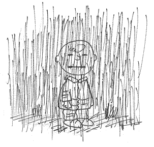

Some days you could almost be weightless. From the moment you touch the rock motion is instant, effortless. This was not one of those days. More Muppet than Moffatt. I was clearly not going to climb well. After getting box-pumped and flailing wildly n my E1 warm-up some clearly non-serious action was called for. And so we spent the morning rigging, and arguing about the technical details of, a double top rope on the desperate and plainly far too bold Death Wish (E7). First climbed (after extensive top roping) by Pete Gomersall in 1982 it was probably the boldest limestone route around, and even now is only surpassed in terms of seriousness by the immaculate Blue Angel. In fact, this fantastic pale blue wall contains the most serious routes around, on immaculate, unbroken limestone. In 1995 Death Wish was on-sighted by an on-form Ian Vickers in an hour-long epic of panic-pasted RP's and sweaty intensity. But we were arguing over whether a double rope or sliding belay would provide the most reliable protection. Dave (Keld) advocated the double rope and got his way by offering to set it up. Meanwhile, the aforementioned boy Vickers had arrived at the crag, watching our elaborate efforts with interest.
Now I hate looking bad, so I was mortified when I was sent up first to have a look. Mortification soon turned to joy as delightful climbing led to a big tree, a no hands rest, and a collection of antique ironmongery - the first and last good gear on the route. From here technical, blind, and balancy moves lead a long way right to a very faint groove and the next gear - a hex #2, bashed, pasted and hammered into a flared crack. Inspiring stuff. From here it is 20ft of fingery steep and even blinder climbing to the breaks and the next gear. A fall from the crux would almost certainly result in a ground fall from almost 100ft. I sagged onto the ropes, pumped and beaten about five feet from the break. Dave fared no better, and to Mr Vickers' obvious glee concluded that to on-sight this route you would have to be 'awesome'.
After lunch Dave top-roped it in one, abbed down and pre-placed some poor wires and led the route. It was an insane effort, forgetting the sequence and slapping through the crux as I belayed, crouching 100ft below in fear.
I have a song to be played in these circumstances, a mantra of success. On the way home the car shook, along with its occupants, to 'Kung Fu Fighting' by Carl Douglas. Well, that should have been the end of the story, but over the weekend I couldn't shake the idea that I should return to Blue Scar to lead this near perfect route - my earlier failure to top rope it somehow forgotten. And so the next Monday, the hottest day of the summer, I found myself below Death Wish in the company of Chris 'darkly insane' Wentworth. The sun had not yet crept onto this face and I was feeling strong. The long reaches and poor gear ensured that I would be spread out thinly, either on, or below the climb.
I had already decided that the climb would only succumb to a 'climb now, ask questions later' approach, and so I geared up, wiped the dirt off my boots and set off up. The experience of climbing a bold route after pre-practice is bizarre. Hyper-tense, you climb in this strange, claustrophobic bubble. The rock around you becomes alive, parting to let you through as all the time you swim slowly to the top, where the bubble bursts and real life floods in. consequently memories of these climbs are broken, almost fractal. Chalking before the slopers, fearful of friction. Clipping the hex, looking at the stairway to heaven, soaring up rightwards, screaming inside as the sun comes out, turning the crag into soap. Arms burning. Strange undercut. Grasp the break. Sweat filled eyes and fear-tight muscles shake to the trees.
I lower off, but I'm too pumped to pull into the rock to strip the gear. Two abseils later, we are back at the car and heading to Gordale, where Chris will lead Solstice (E5). Laughing and joking the sum pours through the windows. Released from the edge, grinning like an idiot. Once more the flanks of Littondale echo to Carl Douglas' hit, 'Kung Fu Fighting'.

Scotland in Summer: By Paul Palfreyman